Introduction to MCP in AEMaaCS
A beginner friendly guide to understanding MCP in Adobe Experience Manager Cloud Service.

What is MCP in AEM?
MCP (Model Context Protocol) is an open protocol that allows AI applications like Claude and Cursor to securely communicate with AEM as a Cloud Service.
Adobe provides hosted MCP servers which expose AEM capabilities through standardized tools.
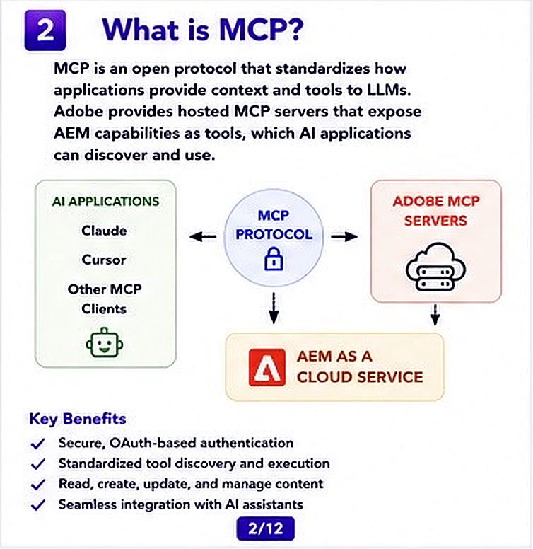
Why MCP Matters
MCP creates a bridge between AI tools and AEM.
Instead of manually integrating every AI application with AEM APIs, developers can use MCP as a standard communication layer.
- Secure communication
- OAuth authentication
- Tool discovery
- Content operations
- Workflow execution
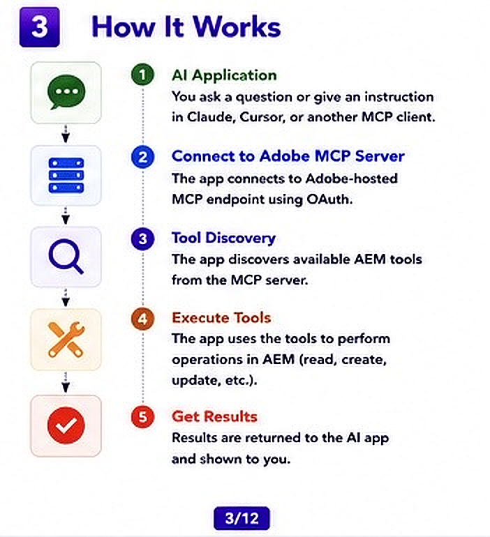
How MCP Works
The process is simple:
- User asks question in Claude or Cursor
- AI application connects to Adobe MCP server
- MCP server discovers available tools
- Tool executes operation in AEM
- Result is returned to user
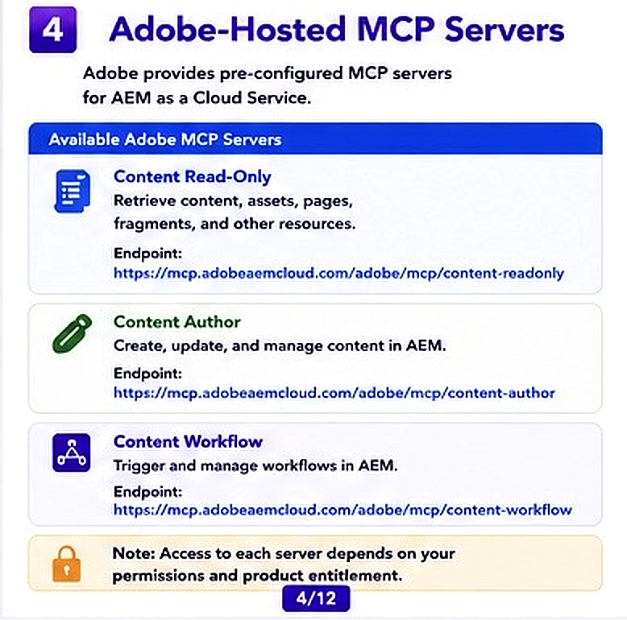
Adobe Hosted MCP Servers
Adobe provides multiple MCP servers for different use cases.
- Content Read Only → Retrieve content safely
- Content Author → Create and update content
- Workflow Server → Trigger workflows
For beginners, it is recommended to start with the Read-Only server.
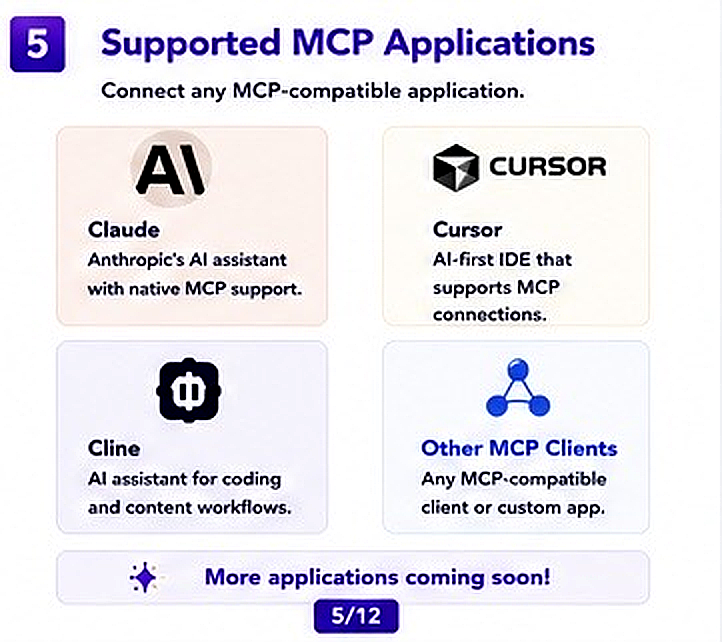
Supported MCP Applications
MCP works with multiple AI applications:
- Claude
- Cursor
- Cline
- Other MCP clients
This flexibility allows developers to integrate AI into development and enterprise workflows.
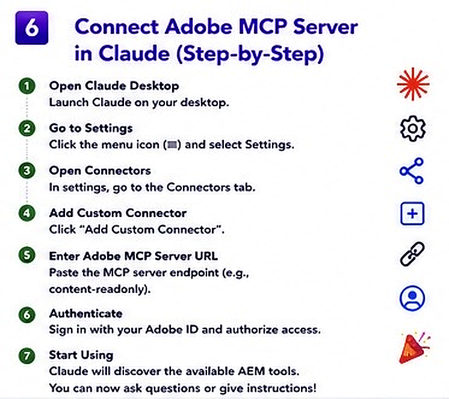
How to Connect MCP Server in Claude
- Open Claude Desktop
- Go to Settings
- Open Connectors section
- Add Custom Connector
- Enter Adobe MCP endpoint
- Authenticate with Adobe ID
- Start using MCP tools
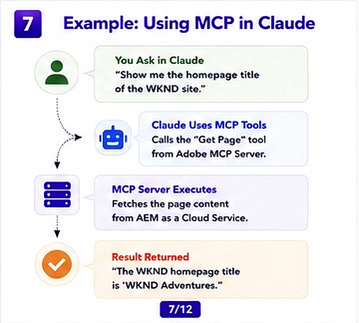
Example Usage
Suppose you ask:
Show me the homepage title of WKND site.
Claude sends request to MCP server, which securely retrieves content from AEMaaCS.
The result is then returned directly to the AI application.
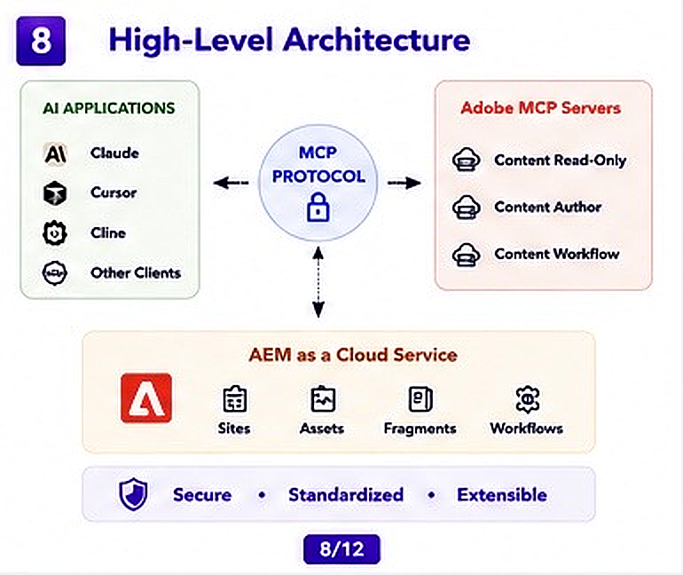
High-Level Architecture
The architecture mainly consists of:
- AI Applications
- MCP Protocol
- Adobe MCP Servers
- AEMaaCS
This architecture is secure, scalable and cloud-native.
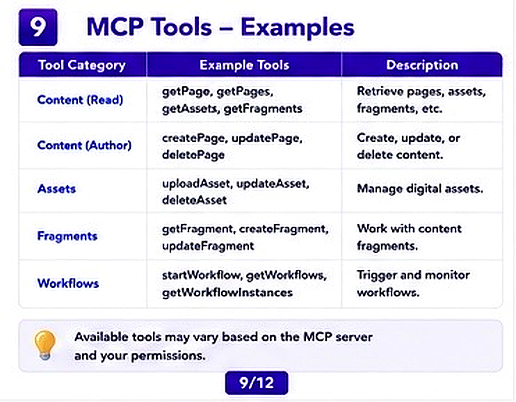
Examples of MCP Tools
- getPage()
- createPage()
- uploadAsset()
- createFragment()
- startWorkflow()
These tools help AI applications perform meaningful operations in AEM.
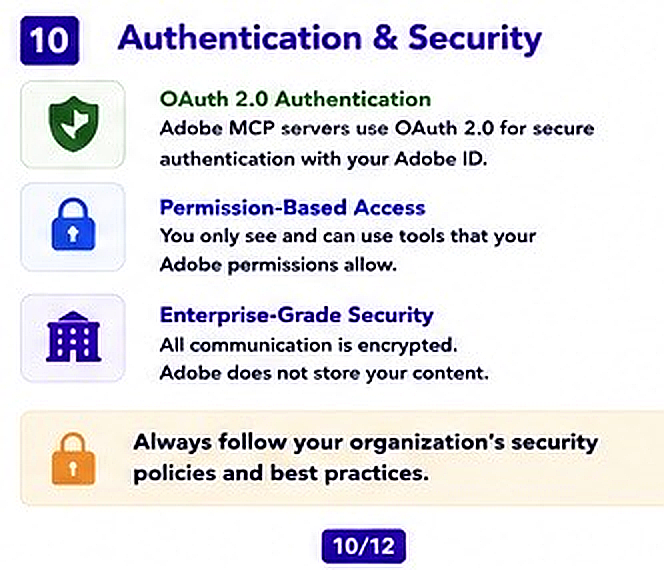
Authentication & Security
Adobe MCP servers use OAuth 2.0 authentication.
Security features include:
- Adobe ID authentication
- Permission-based access
- Encrypted communication
- Enterprise-grade security
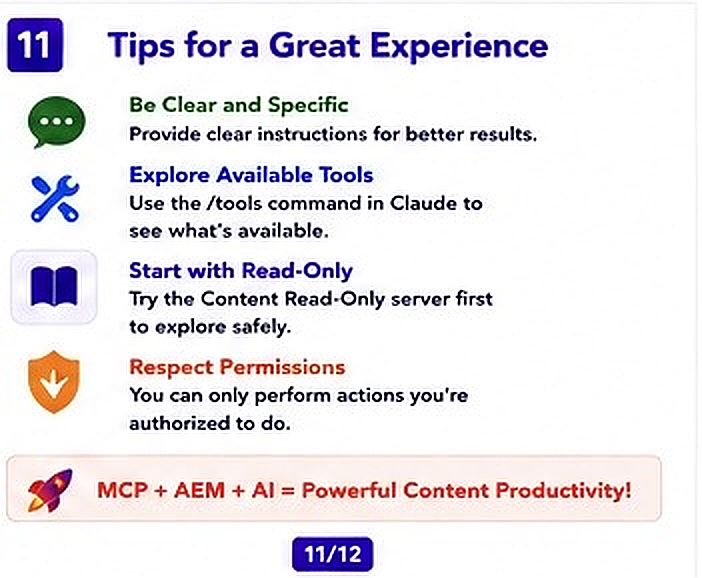
Tips for Beginners
- Start with Read-Only server
- Use clear prompts
- Explore available tools first
- Understand AEM permissions
- Test in non-production environments
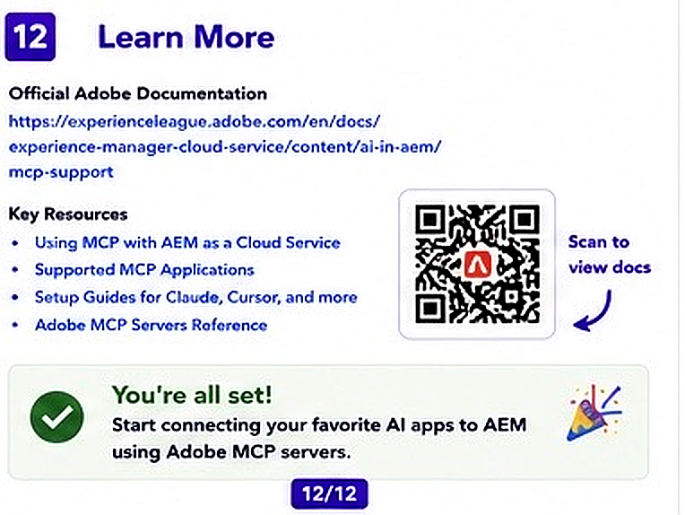
Conclusion
MCP is an important step toward AI-powered enterprise content management.
It allows AI applications to securely interact with AEMaaCS using standardized tools and protocols.
As Adobe continues investing in AI integrations, understanding MCP early can provide a strong advantage for AEM developers.
Learn More
Official Adobe Documentation: